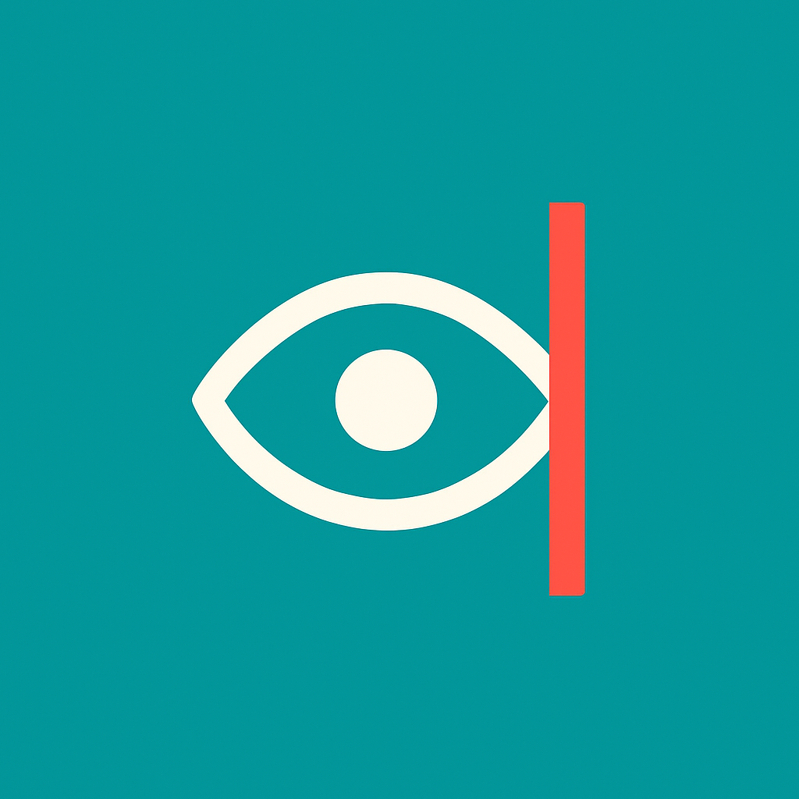

← Home
 Guided Maddox Rod Test
Reset
Setup
Maddox Rod Over:
Right Eye
Left Eye
Start Testing
Skip Tutorial (Manual Grid)
Testing: Horizontal - Primary
Instructions & Question
Loading instructions...
R
L
?
Red Line
(Fellow Eye)
(Rod Eye)
Enter Prism Diopters (Δ):
Double Maddox Rod Adjustment
Right Eye
90°
Left Eye
90°
No Significant Torsion
Reset to Vertical
Showing result graphic...
Back
Confirm & Next
Results & Interpretation
Back to Last Step
Measurement Summary Grid
Vertical Deviation on Head Tilt
Analyze Measurements & Show Suggestions
Pattern-Based Diagnostic Suggestions